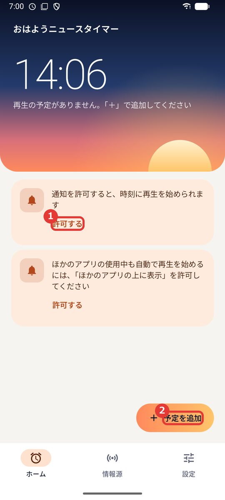
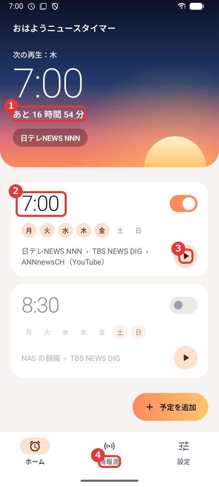
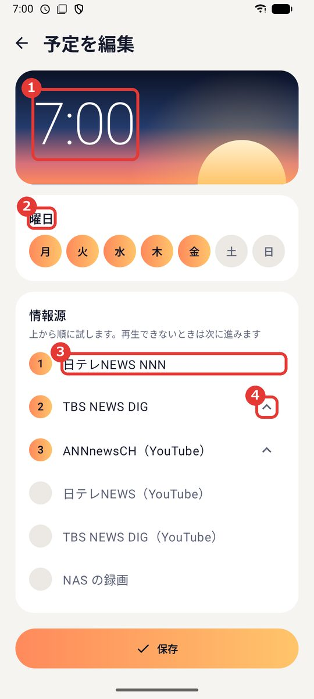
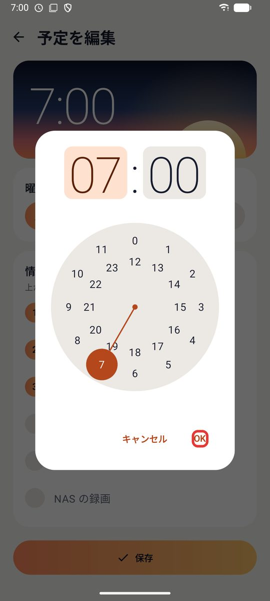
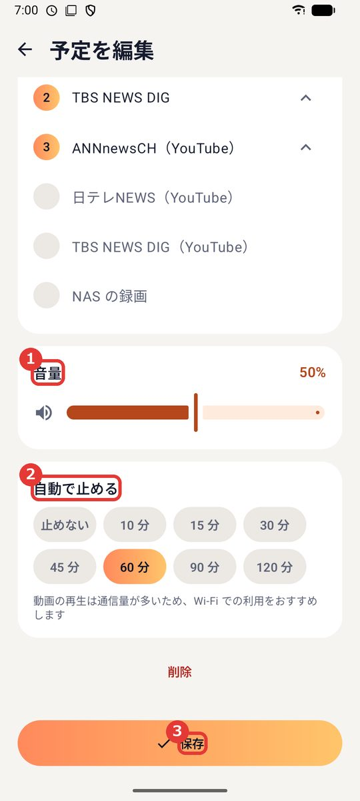
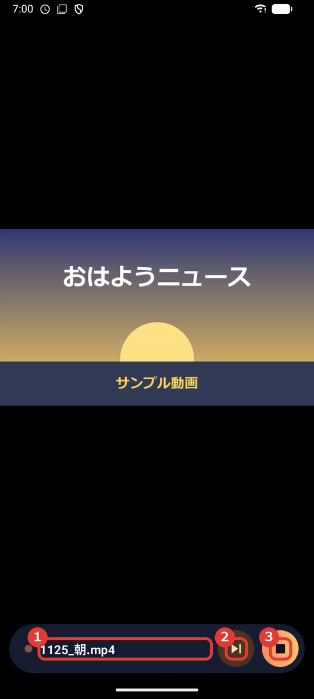
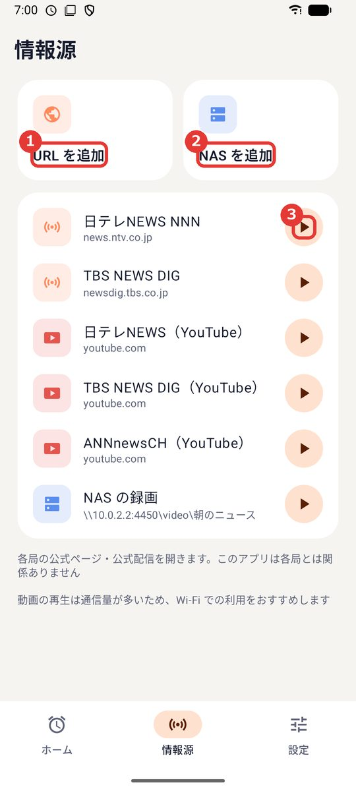
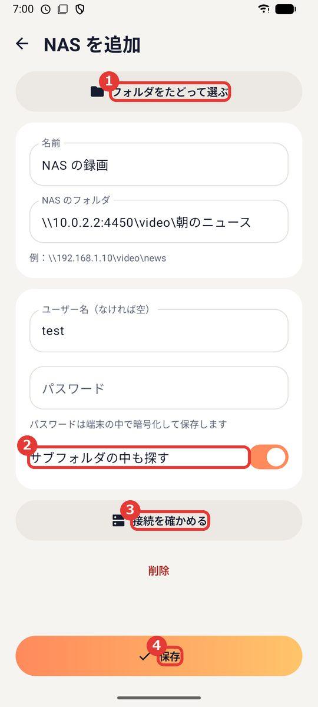
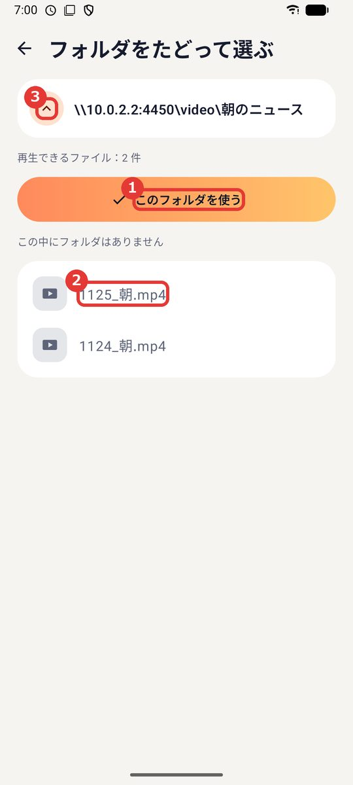
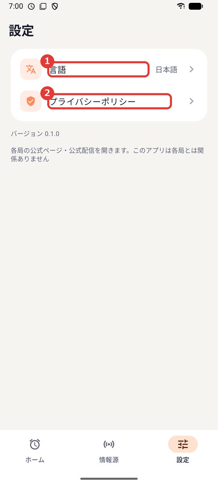

おはようニュースタイマー の紹介ページへ戻る
おはようニュースタイマー の使い方
おはようニュースタイマー（Good Morning News Timer）は、決めた時刻にニュースの再生を自動で始めるアプリです。
この説明は バージョン 0.1.0 の画面に合わせています（2026年11月25日、デザインを新しくしました）。画面はこれから変わることがあります。画像の赤い枠と番号は、説明の番号と同じところです。
- はじめに（許可）
- ホームの画面
- 予定を作る
- 再生の画面
- 情報源
- URL を追加する
- NAS を追加する
- 設定
- よくある質問
1. はじめに（許可）

- 上に出る案内の「許可する」を押し、開いた画面で許可します
- 許可が済んだら、「＋ 予定を追加」で予定を作ります（3.）
- 通知：時刻に再生を始めるために必要です
- 全画面の通知：案内が出たときだけ必要です。画面が消えているときに再生の画面を出します
- ほかのアプリの上に表示：ほかのアプリの使用中も自動で始めるための許可です（任意）。許可しないときは、通知を押すと始まります
2. ホームの画面

- 次に再生する曜日と時刻、最初に試す情報源と、それまでの残りの時間です
- 予定を押すと編集できます。右のスイッチで ON / OFF を切り替えます
- ▶：その予定の内容を、すぐに試せます
- 「情報源」：再生するページ・URL・NAS を見たり足したりします。下のタブで「ホーム」「情報源」「設定」を切り替えます
3. 予定を作る
「＋ 予定を追加」を押します。


- 時刻を押し、時計の窓（右）で時と分を選んで「OK」を押します
- 「曜日」：再生する曜日を押して選びます
- 「情報源」：使うものを押すと番号が付きます。番号の順に試します。もう一度押すと外れます
- 上向きの矢印：試す順を上げます

- 「音量」：再生するときの音量です。いちばん左にすると、端末の音量のままになります
- 「自動で止める」：始まってから止めるまでの時間です
- 「保存」を押します。作った予定は「削除」で消せます
4. 再生の画面


音が出るまでは、夜明けの空と時計（左）が出ます。画面を押すと、後ろのページを見られます。音が出ると再生の画面（右）に変わります。
- いま再生している情報源やファイルの名前です
- 次の情報源のボタン：予定の次の情報源に切り替えます
- 停止のボタン：再生を止めて、音量を元に戻します
- 45 秒ほど待っても音が出ないときは、自動で次の情報源に進みます
- 予定の情報源がどれも再生できないときは、代わりにアラームを鳴らします。停止のボタンで止まります
5. 情報源

- 「URL を追加」：6. へ
- 「NAS を追加」：7. へ
- ▶：その情報源を試します
自分で足したものは、押すと直したり消したりできます。最初からあるものは直せません。
6. URL を追加する

- 「名前」：一覧に出す名前です（空でもかまいません）
- 「URL」：ニュースのページ、YouTube、動画・音声（m3u8・mp4・mp3 など）の URL を入れます
- 「保存」を押します。予定で使うには、予定の編集で選びます
ページによっては、自動で再生が始まらないことがあります。▶ で試してから予定に使ってください。ログインが必要なページには向きません。
7. NAS を追加する
「情報源」の「NAS を追加」を押します。画像のアドレスは見本です。

- 「フォルダをたどって選ぶ」：NAS の中を見ながらフォルダを選びます（下の手順）
- 「サブフォルダの中も探す」：ON なら、中のフォルダも 4 段まで探します
- 「接続を確かめる」：つながると、再生する最新のファイルの名前が出ます
- 「保存」を押します
NAS を選ぶ

- 同じネットワークの NAS が見つかると、下に並びます。使うものを押します
- 見つからないときは、NAS の名前かアドレス（例：
192.168.1.10）を入れます
- 「開く」を押します
「NAS にログイン」の窓が出たら、NAS のユーザー名とパスワードを入れて「OK」を押します。
フォルダを選ぶ


共有フォルダ（左）を押して中に入り、使うフォルダまで順に進みます（右）。
- 「このフォルダを使う」：いまのフォルダに決めます
- 中の新しいファイルの名前が 5 件まで出ます。目当てのフォルダかどうかの目印にしてください
- 上向きの矢印：1 つ上のフォルダに戻ります。端末の「戻る」でもかまいません
- フォルダの場所は、
\\192.168.1.10\video\news のように直接入れることもできます
- 更新日時がいちばん新しい動画・音声を再生します。録画中のものを避けるため、最後の更新から 2 分たったものを優先します
- 端末は NAS と同じネットワーク（自宅の Wi-Fi など）につないでください。NAS の側で SMB（Windows ファイル共有）の 2 以上を有効にしてください
- テレビの録画（MPEG-2 TS など）は、端末によって再生できないことがあります
8. 設定

- 「言語」：12 言語から選べます。「自動」なら端末の言語です
- 「プライバシーポリシー」：このサイトのページを開きます
9. よくある質問
時刻になっても始まりません
ホームの画面に許可の案内が出ていないか、予定のスイッチが ON かを確かめてください。端末の設定でアプリを「強制停止」すると、次にアプリを開くまで再生は始まりません。端末の電源が切れているときも始まりません。
音が出ません
予定の「音量」を上げるか、端末のメディアの音量を確かめてください。イヤホンや Bluetooth につながっていると、そちらから音が出ます。
通信量はかかりますか？
動画の再生は通信量が多いため、Wi-Fi での利用をおすすめします。つけたままにしないよう、「自動で止める」も使ってください。
データはどこに保存されますか？
予定・情報源・設定は、この端末の中にだけ保存します。NAS のパスワードは暗号化します。アプリを削除すると消えます。詳しくはプライバシーポリシーをご覧ください。
お問い合わせ
DNGG-studio：dngg.studio@gmail.com
本アプリは各放送局・YouTube とは関係のない、非公式のアプリです。各局の名称・番組名、YouTube は、それぞれの会社の商標です。
紹介ページへ戻る